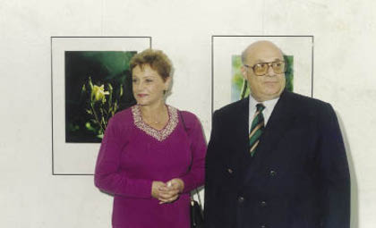

Lefkoşe’deki makamına veya yazlık evine ne zaman gitsem, önündeki masada veya yanındaki koltukta, mutlaka fotoğraf makineleri bulunurdu. Konuşmaya dalınca Denktaş, hem konuşur, hem de fotoğraf çekmeye başlardı. Sonraları ben de kendi makinemi yanımda götürmeye ve Denktaş’ın fotoğraflarını çekmeye başladım.
Denktaş fotoğraf çekerken doğal hareket edilmesini severdi. Poz vermek için sabit durulmasından hoşlanmazdı. Denktaş’ın çektiği resimler gerçekten çok güzeldi. Kıbrıs Türkü’nü insan olarak fotoğraflarında ebedileştirmişti. Ağırlıklı konusu insandı. Yaşlı Kıbrıslılar, çocuklar çoğunluktaydı. İnsan fotoğrafları dışında doğa ve kültürel eserler ikinci ve üçüncü yerleri işgal ederlerdi. Denktaş’ın fotoğraflarına baktığınız zaman, Kıbrıs Türkü’nün günlük yaşamını, Kıbrıs’ın doğasını ve kültürel dokusunu buram buram içinizde duyarsınız.
Fotoğraflarında, insan-doğa-kültür dokusunu, Kıbrıs’a has unsurları ile çok net görürsünüz. Fotoğraflarını yan yana koyup baksanız, Kıbrıs Türkü’nün geçmişte çektiği sıkıntıyı yaşlıların derin çizgili yüzlerinde görürsünüz. Çocuklarda masumiyet ve iyimserlik hâkimdir. Kıbrıs’ın tarihî ve doğal dokusu ise çiçek, ağaç, deniz, cami, kemer ve ev fotoğraflarında bütün yerel özellikleri ile önünüze serilir.

Rauf Denktaş eşi Aydın Denktaş ile birlikte.
Fotoğraf tutkusu için, “beni rahatlatıyor” deyimini kullanırdı. Kendi kendime, fotoğraflarına bakarak çok düşündüm:
– Acaba onun için fotoğraf çekmek, bilinçaltına, “kendi dünyası”na kaçış mı idi?
– Gerçek dünyadaki dikenleri ve zor mücadeleyi, “iç dünyasında dengeleyen, yumuşak, masum, istediği gibi yön verebildiği” bir kapı aralığı, bir mercek miydi?
Kim bilir! Belki de Denktaş kendisi bile tam olarak bilmiyor, sadece “beni rahatlatıyor” demekle yetiniyor.